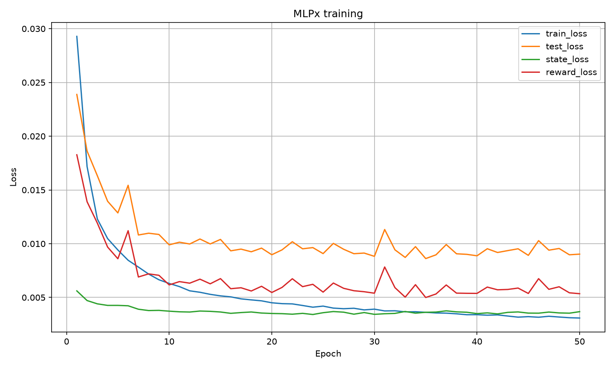
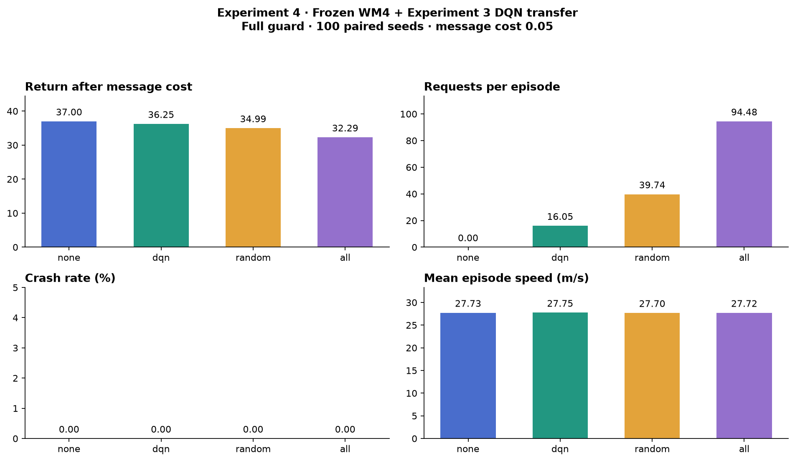

Experiment 4: Planner Crash Forensics & Safety Guards
Experiment 4 conducted a forensic investigation into why raw neural world-model planning crashed on test seeds despite low training loss, and introduced executive safety guards that completely eliminated crashes.
- World Model Checkpoint:
checkpoints/experiment_4/MLPx/best.pt - Key Code Implementation:
src/cooperative_driving/planner/safety.py
Objective & Hypothesis
Why does a world model with 86% action agreement crash >90% of the time in closed-loop driving, and can lightweight safety constraints guarantee collision-free navigation without slowing down cruising speed?
The Three Forensic Discoveries
During 20-seed deep-dive replaying, three structural failure modes were uncovered:
- Runaway Target Speed: Because HighwayEnv gives higher rewards for higher speeds (up to 30 m/s) and lacked an environment cap, the planner continuously issued
FASTERcommands, pushing vehicle speed above 50 m/s until braking was physically impossible. - Missing Controller Memory: The kinematic observation tracked vehicle speed, but omitted the ego's target speed and target lane. Without knowing whether the car was already attempting to accelerate or change lanes, the world model could not reliably predict the next step.
- Continuation Optimism: In near-crash scenarios, the world model was overly optimistic about recovering on steps 2 and 3, repeatedly choosing
IDLEinstead of braking.
The Solution: Executive Safety Guards (safety.py)
A four-rule filter was added to inspect planner decisions before execution:
- 30 m/s Speed Cap (
--max-target-speed 30): BlocksFASTERif target speed is ≥ 30 m/s. - Road Boundary Protection: Blocks
LANE_LEFTon lane 0 andLANE_RIGHTon lane 3. - Front Braking Guard (
--safety-guard): ForcesSLOWERif front clearance < 8 m or closing TTC < 3 s. - Destination Clearance Guard (
--lane-change-guard): Blocks lane changes if the target lane lacks 8 m clearance or while a maneuver is settling.
Benchmark Results Across 100 Fresh Seeds
| Controller Setup | Crashes | Finished Full Episode | Mean Speed | Settled Lane Changes |
|---|---|---|---|---|
| Raw 3-Step MLPx (No Guards) | 97 / 100 | 3% | 32.0 m/s | — |
| MLPx + Speed Cap + Braking Guard | 6 / 100 | 94% | 27.3 m/s | 257 commands |
| MLPx + Full Destination Guard | 0 / 100 | 100% | 27.4 m/s | 165 settled |
| Rule-Based Geometry Baseline | 0 / 100 | 100% | 26.8 m/s | — |
World Model Training & Policy Comparison
World Model Training Loss (WM4)
Trained on 566k counterfactual records balanced equally across all 5 ego commands:

Guarded Policy Comparison
Comparing DQN3, Ask Nobody, Random, and All across 100 guarded episodes:

Guarded Policy Video
Driving across all 100 timesteps on the shared experiment-video seed 120 with no crash:
Key Findings & Lessons Learned
- Crashes Reduced from 97% to 0%: Adding executive safety guards completely eliminated collisions while preserving highway speed.
- Kinematics Suffice on Normal Highways: Across 100 guarded episodes, asking nobody achieved 37.00 return with 0 crashes. DQN3 requested 16.1 times per episode but gained only +0.05 reward, losing net return due to message costs.
- The Next Frontier: To demonstrate the true value of communication, we need scenarios where neighbors hide their true destination lane—leading directly to Experiment 5.